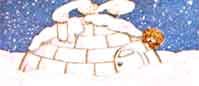
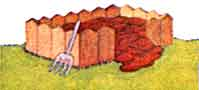
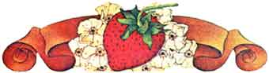
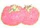

The Good Earth Handbook
Insulating with snow, growing healthier, fuller strawberries, vegetable planting guide, compiling compost.
By the Mother Earth News editors
May/June 1976
Insulate with snow.
Compiling Compost
Strawberry Short Cut
|
 Many older houses aren't well sealed against the weather. Especially around the base. When the snow falls, a quick once- around the house with a snow blower throwing snow up against the base of the house can cut down on your heating bills. |
 Compost is simply decayed organic matter Leaves make good compost. So do coffee grounds. Grass clippings. And kitchen scraps. (Avoid meat and fat ... they smell.) Turn your pile with a pitchfork once a week and keep it damp. When you add finished compost to your garden, it adds nutrients to the soil and creates rich organic humus. |
 For strawberry plants to thrive and survive, they should be planted at the proper depth. Dig a hole to accept the full depth of the roots and then plant so the crown will be even with the ground surface. |
|
Broccoli Start indoors and transplant into garden in early spring. Very sensitive to extreme heat. Matures in 60-70 days |
Carrots Sow thickly (20-30 seeds per foot) and thin later. Won't grow well in rocky or clay soil. Matures in70-75 days. |
Corn Sow in parallel rows so wind can spread pollen effectively. Thrives on plenty of water and heat. Maturesin 70-90 days |
 Lettuce Sow rows of different kinds at intervals throughout the season for continual supply and varieties. Matures in 45-60 days. |
Onions Plants sets ( baby onions) from late winter to early spring. They're slow but easy to grow. Matures in 90-120 days. |
Peas Plant in fall, winter or early spring. They like cool weather. Matures in 60-70 days. |
|
Radishes Plant several times during the season - they grow fast. Needs plenty of water. Matures in 25-35 days |
Tomatoes Start indoors and transplant outdoors when two or three inches high. Three to six are usually enough. Matures in 100 days. |
 |